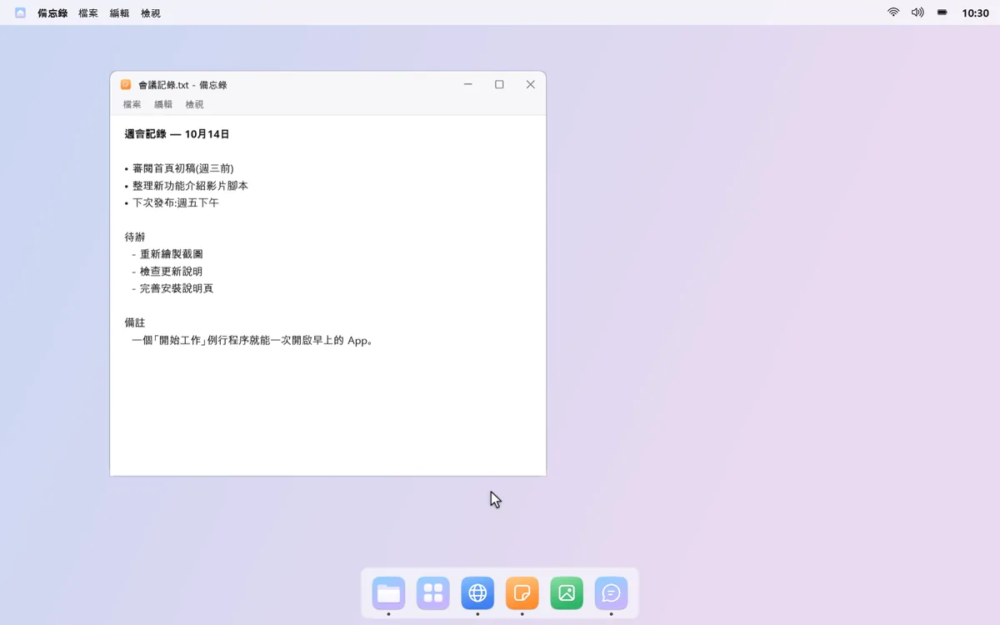


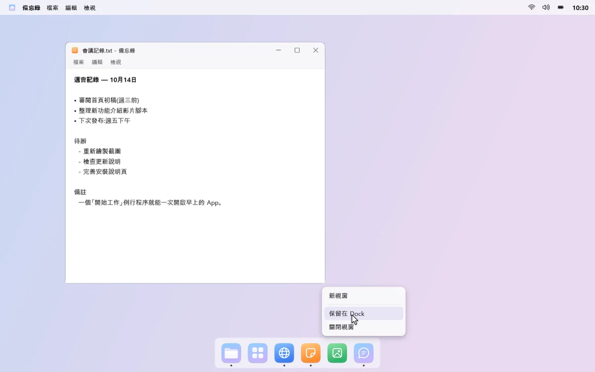
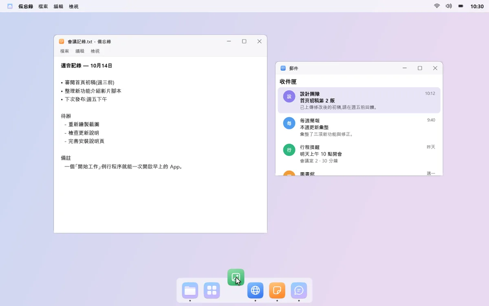
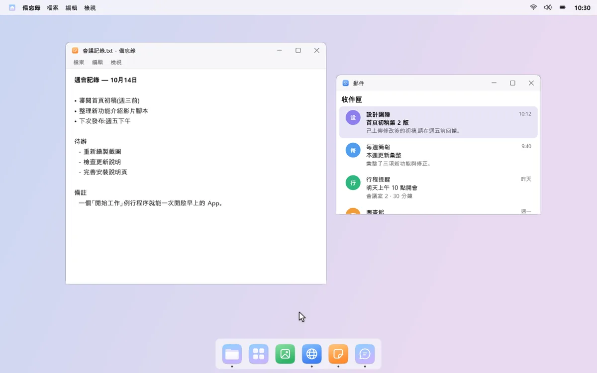
下方是開啟和切換 App 的 Dock，上方是集合 App 選單、控制中心和行事曆的選單列。常一起開的 App，用例行程序一鍵全部打開。
15 天免費試用所有功能，喜歡再一次買斷。不用訂閱，沒有廣告。
Windows 11，或 Windows 10 2004 以上版本 · x64 電腦
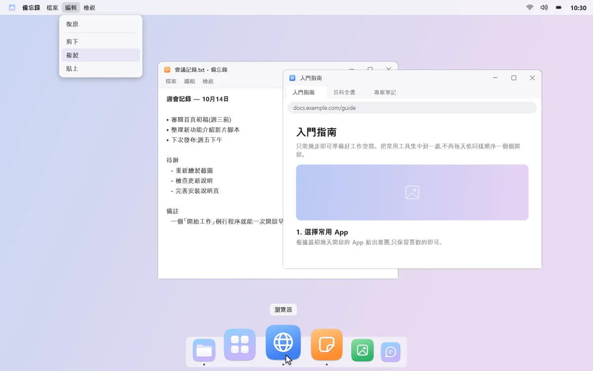
圖示塞得滿滿的，要找的 App 卻不在。
音量、亮度、行事曆，各在不同的地方。
郵件、聊天、文件一個個打開，再一個個拖到定位。
mongdock 幫你省下這些小麻煩。




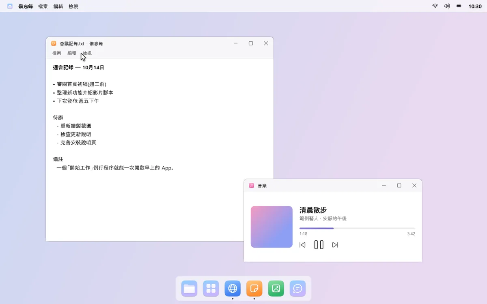
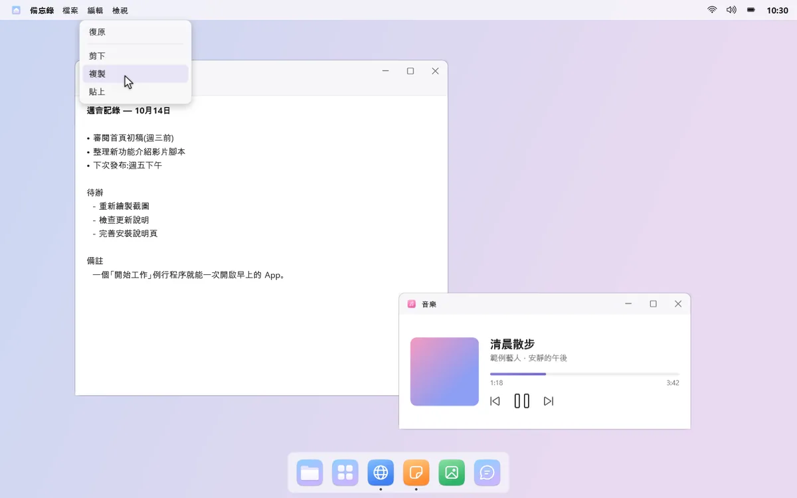
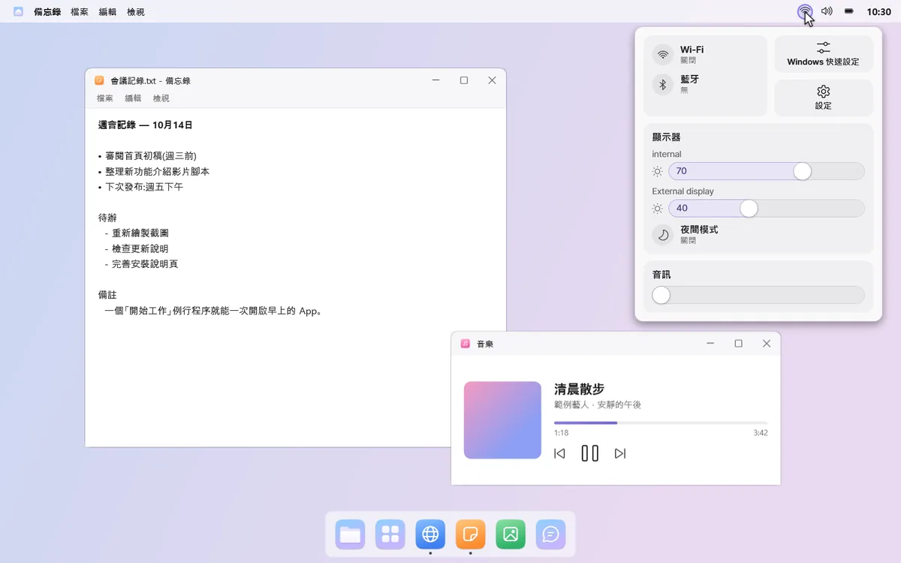
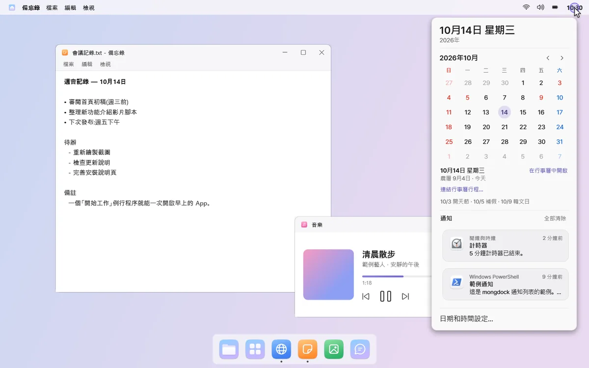

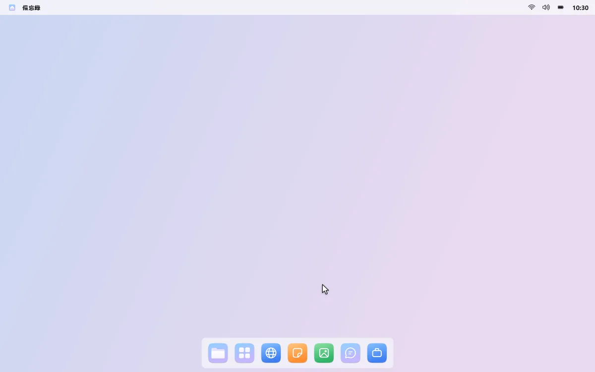
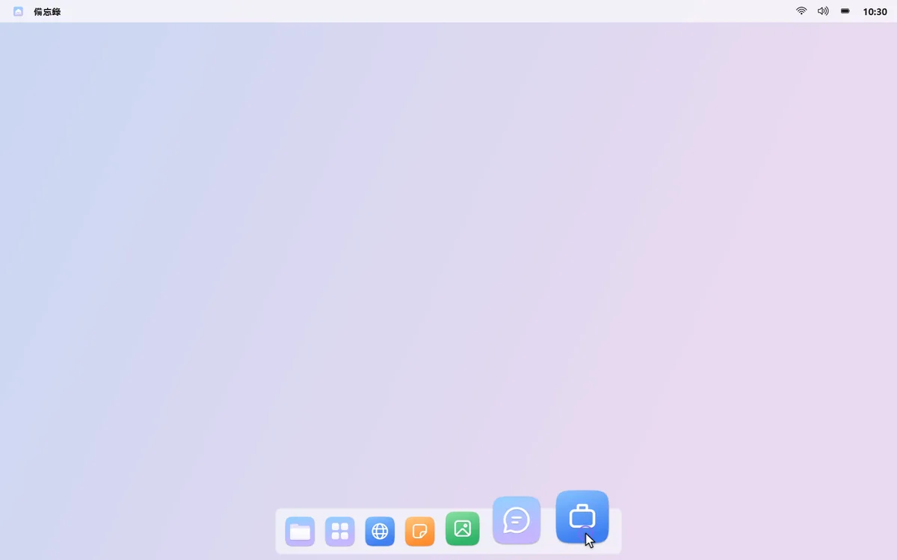
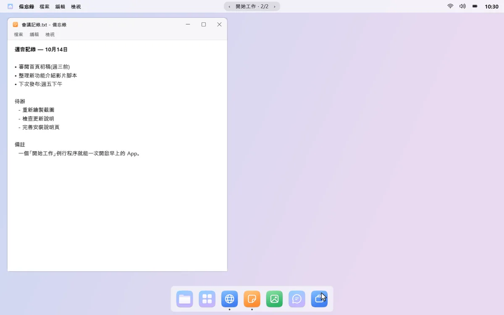
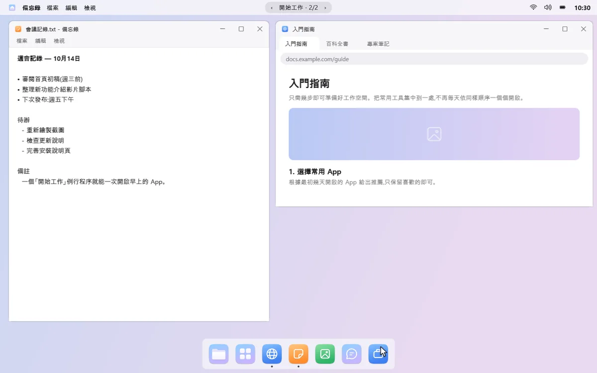
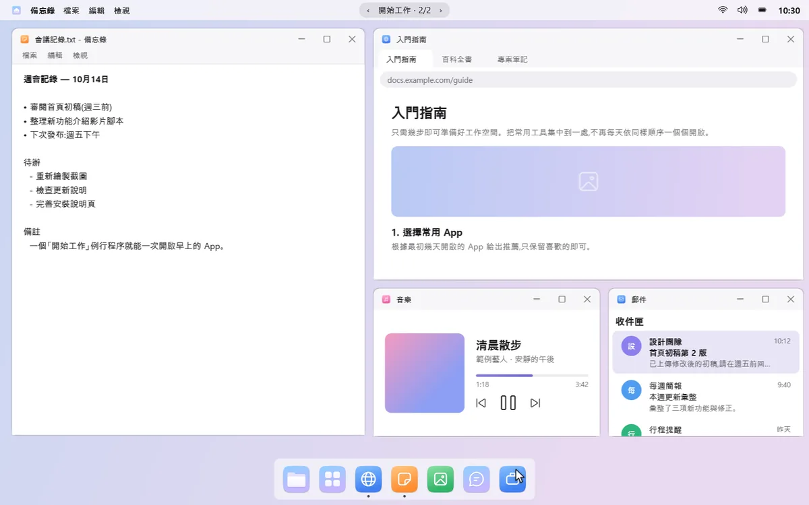
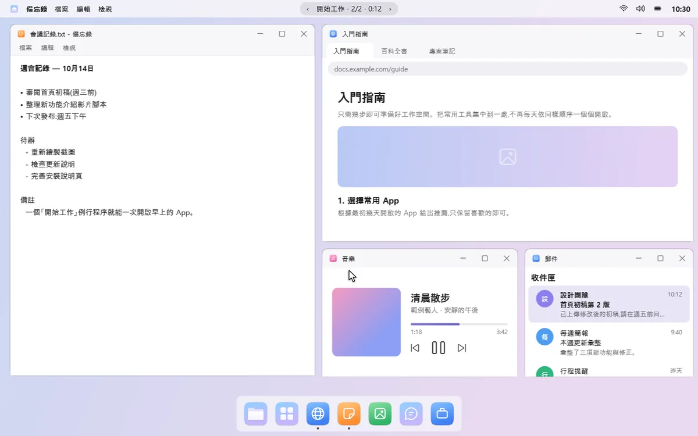
App 使用紀錄、視窗標題、例行程序和通知內容，只在這台電腦上使用。mongdock 不會讀取瀏覽器的網址列和瀏覽紀錄。使用統計只在你同意時傳送，而且只有次數。
mongdock 只在執行時隱藏 Windows 工作列。暫停或結束後，它就會回到原處。
「解除安裝 mongdock…」會先恢復工作列、自動隱藏和通知音效，再開啟 Windows 的解除安裝頁面。
免費試用 15 天